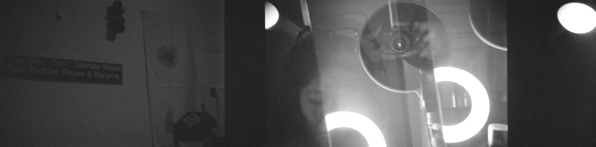
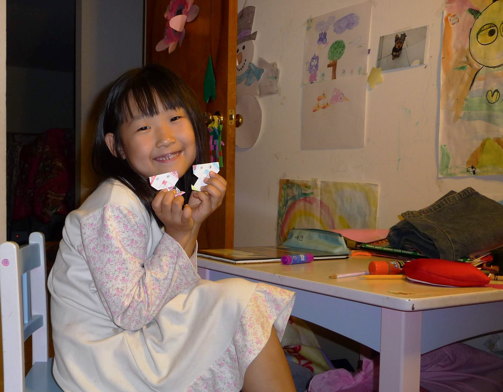
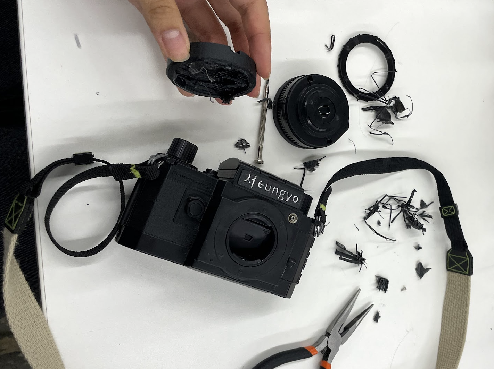
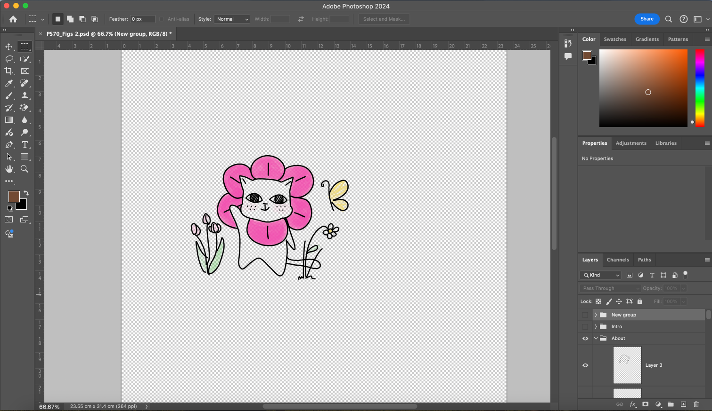
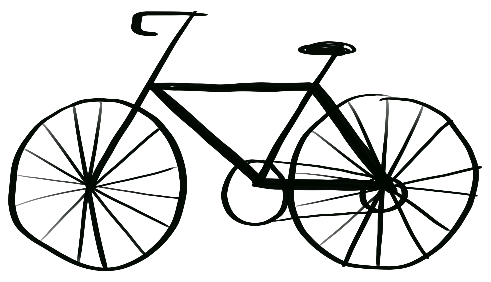

HEY! I'M ALYSSA.
I am a recent graduate from Harvard College. I studied bioengineering working to build on the intersection of biomaterials and augmentation of the human body.
Much of my time has been spent in tissue engineering– particularly on fabricating human vascular structures from scratch.
However, my recent interest in wearable device applications led me to pivot towards large scale human interfaces.
My senior thesis project involved a collaboration with Mass Eye and Ear, where I worked to fabricate a realistic model of the human outer ear to investigate cartilage-mediated sound transmission.
I built EUNGYO STUDIOS (pronounced "UNG-yoh") as a cohesive space for all of my work and interests.
From the website to every illustration, image, and video, everything here is created by me from scratch.
The portfolio brings together technical projects from school and self-initiated projects.
I LIKE TO BUILD THINGS.
Growing up, I was endlessly curious and drawn to learning by doing—from learning origami at age five to steaking my own seat in weekly knitting circles alongside retired seniors at age 12.
Making things has always felt instinctive to me.

It wasn't until a final project for a biomechanic class that I was formally introduced to the joys of working in a makerspace.
The prompt was simple: build a device grounded in biomechanical principles explored throughout the course.
I naturally took on the bio-facing aspects of the project, applying my understanding of signal processing to filter EMG data and tune activation thresholds to ensure a reliable device response.
This work culminated in the Co-Contraction Activated Extendo Arm project (2023), developed in collaboration with my project partners—and now lifelong friends—Mackenzie Li and AnhPhu Nguyen.
During that same semester, I was introduced to photography through an elective course.
Once again, I found myself reconnecting with working with my hands—this time in art.
I was naturally drawn to film due to the analog process of the medium, ultimately building my own 35mm camera as part of my ongoing 서Eungyo project (2023-present).
Designing and assembling a fully functional camera deepened my appreciation for precision mechanical systems and hands-on fabrication.

That semester marked a turning point in how I approached engineering.
The following year I enrolled in Introduction to Digital Fabrication (PS70), where I formalized my skills in CAD, machining, electronics integration, and digital documentation.
I returned as a course assistant, mentoring students during office hours and supporting the development of their fabrication projects.
Since then, I have worked on a range of projects that involve building physical systems.
This portfolio documents that work and reflects my sustained commitment to hands-on engineering, rapid prototyping, and iterative system development.
HOBBIES, ETC.
Again, outside of academic and project work, I gravitate toward hands-on creative pursuits. I enjoy experimenting, building small things, and following ideas wherever they lead.

When I step away from making, I'm usually outside. Growing up in rural southeastern Ohio meant spending long stretches of time outdoors—camping, hiking, cycling, swimming. That rhythm of movement and quiet has stayed with me.
